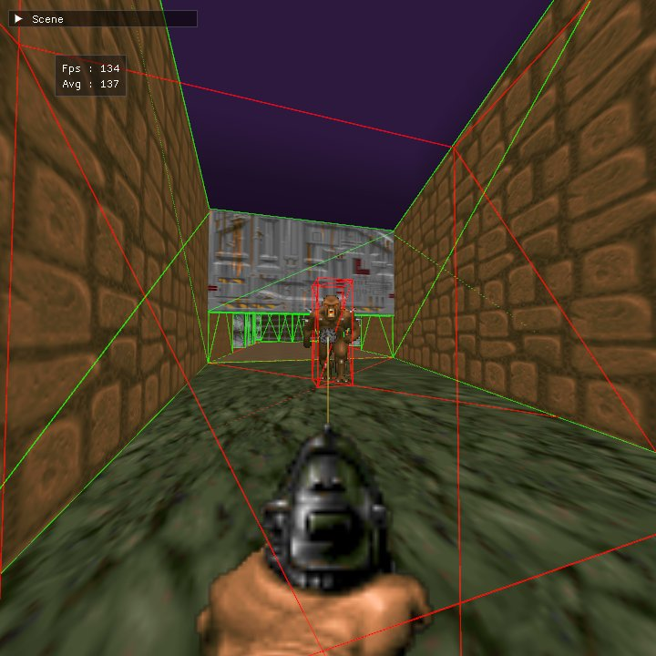

KiliEngine II
- Team
- Solo project
- Time
- Since June 15th, 2026 (ongoing)
- Technologies
- C++ / OpenGL
KiliEngine is a 3D engine I’m building in C++ to learn engine architecture and graphics rendering. The first version implemented sphere and box collisions, meshes, textures, basic physics and raycasting.
I used it to make two small games: a bowling game to test physics and collisions, and a Doom-like to try more gameplay. I’m now rebuilding it as KiliEngine II, on cleaner foundations: better architecture, renderer abstraction, config files, Premake solution generation and more.
